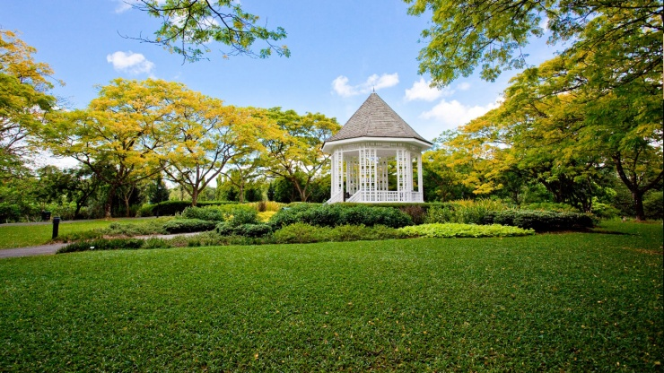
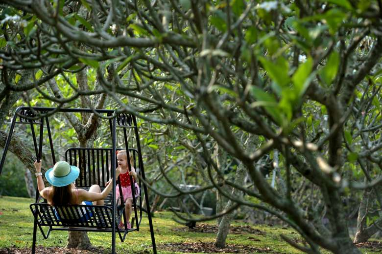

The Singapore Botanical Gardens!




Click here to find out more about performances available!
Check out some of the photos taken by other visitors!


Check out this short video to get a glimpse of the Singapore Botanical Gardens!
directionsDirectionsdirections

directions_walkOn Foot
The nearest entrance to the Shaw Foundation Symphony Stage is the Palm Valley Gate on Cluny Park Road.
directions_carBy Car
Parking is available at:
Botany Centre, Tanglin Gate (via junction of Holland/Napier Road)
Visitor Centre, Nassim Gate (via junction of Nassim/Cluny Road)
Raffles Building (via junction of Evans/Cluny Road)
Jacob Ballas Children’s Garden (via Bukit Timah Road)
Cluny Park Gate (via Cluny Park Road)
Along Tyersall Avenue
directions_busPublic Transport
By bus alighting at Napier/Holland Road (Tanglin Gate)
SBS Transit 7, 105, 123, 174,174e
SMRT 75, 77, 106, NR8
Nearest MRT Station : Orchard MRT (North-South Line) and a 5-min bus ride to Tanglin Gate
By bus alighting at Bukit Timah/Dunearn Road (Bukit Timah Gate or Jacob Ballas Children’s Garden)
SBS Transit 48, 66, 151, 153, 154, 156, 170
SMRT 67, 171
Nearest MRT Station : Botanic Gardens MRT Station (Circle Line)
local_taxiBy Taxi
The drop-off point to the Shaw Foundation Symphony Stage is the Visitor Centre, Nassim Gate (via junction of Nassim/Cluny Road)
See you there!
Visitor Centre, Nassim Gate (via junction of Nassim/Cluny Road)
Raffles Building (via junction of Evans/Cluny Road)
Jacob Ballas Children’s Garden (via Bukit Timah Road)
Cluny Park Gate (via Cluny Park Road)
Along Tyersall Avenue
directions_busPublic Transport
By bus alighting at Napier/Holland Road (Tanglin Gate)
SMRT 75, 77, 106, NR8
Nearest MRT Station : Orchard MRT (North-South Line) and a 5-min bus ride to Tanglin Gate
By bus alighting at Bukit Timah/Dunearn Road (Bukit Timah Gate or Jacob Ballas Children’s Garden)
SBS Transit 48, 66, 151, 153, 154, 156, 170
SMRT 67, 171
Nearest MRT Station : Botanic Gardens MRT Station (Circle Line)